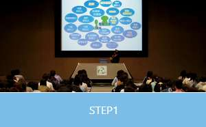

チーム医療プログラム
座学だけでは身につかない生きたチーム医療が学べる
今、現場では「チーム医療」が必要不可欠
「チーム医療」とは、病気や障がいを持つ患者さんや家族を中心に、各分野の専門家が連携し、治療・ケアに当たること、例えば病気やケガをした患者さんの場合、診断→治療→リハビリといった流れを経ていきますが、医療の高度化・複雑化によって、主治医だけで判断することが困難になってきています。そのため各分野の専門家が集まり、意見交換しながら決定していくことが不可欠になっています。
最先端技術で「即戦力」へ
大阪医専には緊迫した医療現場をVR（仮想現実）で体感しながら学ぶ実習があります。 VRを活用することで、自分が目指す職種の視点だけではなく、医師やコ・メディカルスタッフの目線を、360度の視野で体験することができます。 医療現場での全体の動きを把握することで、チーム医療への理解や臨床判断能力の向上につながります。
POINT

【他職種の仕事・役割を知る】
入学時からチーム医療教育への取り組みをスタート。自らが目指す職種だけではなく他職種の仕事内容も知り、実際の事例とともに各職種の専門性や役割を学んでいきます。
【学科の枠を越えて、チームで学ぶ】
様々の学科の学生が1つのチームとなり、与えられた症例課題の問題解決に挑む演習。「チーム医療」を疑似体験することで問題解決力、チームワーク、レポート作成力、プレゼンテーション力といった多様な能力を修得します。
【継続して学び、知識をつなげる】
本学では、卒業研究もチーム医療教育の一環と考えます。在学中に修得した知識・技術・経験をもとに、専門学校 大阪医専での学びを発表し、共に学んだ仲間や教官たちとその成果を分かち合います。